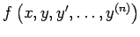
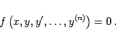
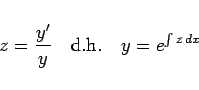
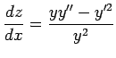
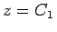
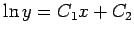
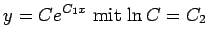

Inhalt Index DeskTop Bronstein

 Differentialgleichungen Gewöhnliche Differentialgleichungen Differentialgleichungen höherer Ordnung und Systeme von Differentialgleichungen Erniedrigung der Ordnung
Differentialgleichungen Gewöhnliche Differentialgleichungen Differentialgleichungen höherer Ordnung und Systeme von Differentialgleichungen Erniedrigung der Ordnung


 ist eine homogene Funktion in y, y', y'',...,y(n):
|  | (9.31a) |
Eine Erniedrigung der Ordnung kann durch die Substitution
|  | (9.31b) |
erreicht werden.
| Beispiel |
|
Die Differentialgleichung yy''-y'2=0 wird durch die Substitution z = y'/y mit der Ableitung  umgeformt. Die Ordnung wird dabei um 1 erniedrigt. Man erhält , woraus  folgt oder . |